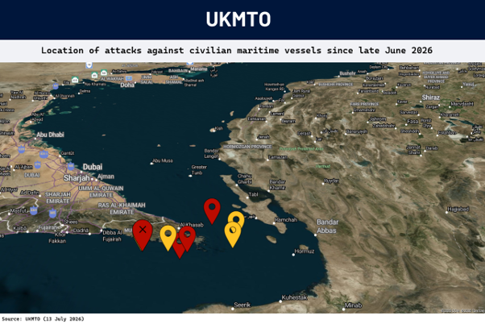
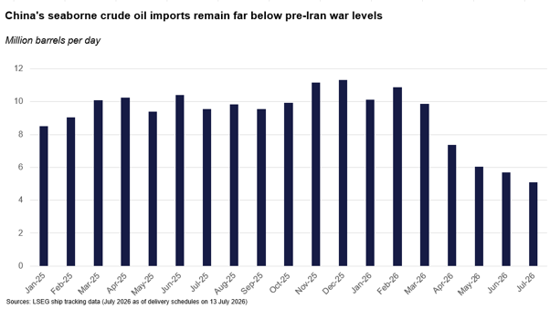
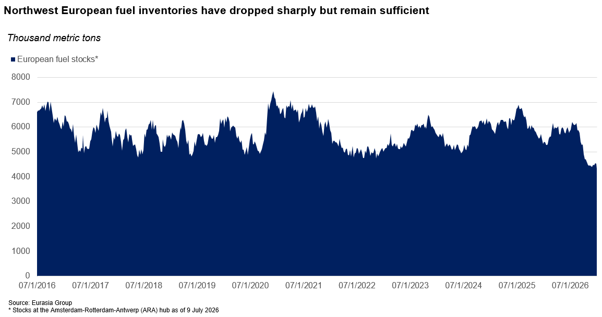

|
 |
|||
|
||||
|
||
Despite subdued response to skirmishing, oil prices are likely to rise now that US has escalated. Persistent skirmishing between the US and Iran culminated in a US decision to reimpose the blockade on Iran Monday morning. While oil prices have not yet spiked to their wartime highs, the escalation means traffic in the Strait of Hormuz is likely to be disrupted. As a result, Eurasia Group is revising upward its price forecast for the year (see: Gulf supply flood will keep Brent in $65-$80 range in 2026, 26 June 2026): prices are likely to move into a higher band, of $75-95 per barrel for Brent, until there is de-escalation. Shipping activity will remain depressed but won’t fall to zero. Shipping through Iranian waters is relatively active, though the return of the US blockade may disrupt this flow. The Omani route also continues to see low-volume traffic (see: Strait of Hormuz traffic will remain more robust than expected, 15 May 2026). The route has some protection by the US Navy and is recommended by the Joint Maritime Information Center (JMIC). However, most vessels there now switch off their satellite transponders, which makes detection by Iran more difficult but raises the risk of accidents, especially in the narrow, partly shallow waters of Oman’s Strait of Hormuz.
 China’s crude imports remain suppressed. China has emerged as a crucial swing state in setting oil prices because it can quickly reduce or raise crude imports. Drawing from its enormous inventories, China has cut seaborne crude imports from around 11 million bpd before the war to below 6 million bpd in June, preventing a much sharper crude price spike (see: Beijing is likely to become the biggest variable in oil pricing, 29 June 2026). Although July imports will almost certainly exceed June volumes, China’s imports will probably remain subdued until crude prices fall below $70 per barrel.  Global fuel inventories remain low and could trigger price spikes by September. Despite modest inventory gains in May and June, stockpiles in Europe and North America remain low. In Europe, total refined product inventories—including gasoline, diesel, and jet fuel—at the Amsterdam-Rotterdam-Antwerp trading hub have fallen by more than 20% since the war began, leaving them near their lowest level in a decade. North America faces a similar situation, with gasoline and diesel stocks also down sharply. Outright global fuel shortages remain unlikely, however, because demand has adjusted enough to bring consumption below supply levels.  An intensifying race between the UAE and Saudi Arabia for market share will probably create a supply overhang later this year (see: UAE-Saudi competition will keep prices low, 6 July 2026), provided there is de-escalation that allows traffic through Hormuz to recover. The UAE no longer faces a production quota after it left OPEC in May. Because the country can export up to 2 million barrels per day (bpd) via pipeline, and it has quietly shipped oil by tanker through the strait since May, the UAE is likely operating close to export capacity. This is reflected in the UAE’s crude discount of about $5 per barrel versus Brent, which implies an aggressive effort to gain market share. Saudi Arabia, which can export crude via pipeline and has also sent tankers through the strait, has sharply cut prices. In early July, the kingdom slashed its official selling price for Asian clients by $11 per barrel and to a discount of $1.50 per barrel relative to the Dubai/Oman benchmark. |